หอก
หอกทั้งหมด 47 ชิ้น เรียงตามเลเวล
| ชื่อ | Lv | ATK | ธาตุ | ได้จาก |
|---|---|---|---|---|
| 1 | 50 | ไม่มีธาตุ | อีกาขโมยข้าวโพด 0.25% | |
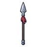 หอกสั้นพู่แดง | 1 | 47 | ไม่มีธาตุ | อาวุธเริ่มต้นของสาย (ได้ตอนเปลี่ยนอาชีพ) |
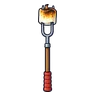 หอกส้อมย่างมาร์ชเมลโล่ | 4 | 52 | ไฟ | ตอไม้ถ่านคุ 0.25% |
| 9 | 54 | ไม่มีธาตุ | หมูป่าเขี้ยวตัน ร่างเขาเงิน 0.25% | |
| 13 | 48 | น้ำ | กบบึงใส 0.12% | |
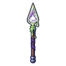 หอกสไลม์เรืองแสง | 15 | 46 | พิษ | สไลม์เรืองแสง 0.06% |
| 17 | 48 | ไม่มีธาตุ | หุ่นไล่กาผีสิง 0.12% | |
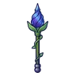 หอกดอกระฆังราตรี | 21 | 46 | ลม | นกกระจอกพายุ 0.06% |
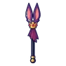 หอกหูราชาค้างคาว | 25 | 62 | มืด | ราตรีราชาค้างคาว 0.5% |
| 26 | 84 | ไม่มีธาตุ | ก้อนหินลอยแตกตัว 0.25% | |
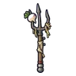 หอกคราดชาวนาซอมบี้ | 28 | 75 | ไม่มีธาตุ | ซอมบี้ชาวนา 0.12% |
| 30 | 82 | ไม่มีธาตุ | โครงกระดูกทหาร 0.25% | |
| 34 | 80 | ไม่มีธาตุ | แกะเมฆเขาม้วน 0.25% | |
| 36 | 90 | น้ำ | บอสผู้ถูกรากสิง | |
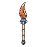 หอกก้ามปูเสฉวนเห็ด | 36 | 82 | ดิน | ปูเสฉวนหมวกเห็ด ร่างหมวกส้ม 0.5% |
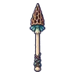 หอกอัศวินเห็ดรา | 36 | 75 | ดิน | อัศวินเห็ดรา 0.12% |
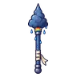 หอกเมฆฝน | 36 | 72 | น้ำ | แกะเมฆเขาม้วน 0.06% |
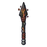 หอกถ่านคุ | 38 | 75 | ไฟ | ตอไม้ถ่านคุ 0.12% |
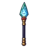 หอกขวดผีดวงไฟ | 40 | 72 | วิญญาณ | ผีดวงไฟ 0.06% |
| 42 | 75 | วิญญาณ | ป้ายหลุมศพผีสิง 0.12% | |
| 44 | 98 | พิษ | ราชาเห็ดเรืองแสง 0.5% | |
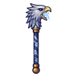 หอกหัวอินทรีพายุ | 46 | 72 | ลม | อินทรีพายุ 0.06% |
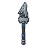 หอกหมาป่าหอน | 48 | 75 | มืด | หมาป่าเงาจันทร์ 0.12% |
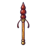 หอกนางพญามด | 50 | 98 | ดิน | รังนางพญามด 0.5% |
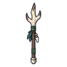 หอกเขากวางป่า | 52 | 116 | ไม่มีธาตุ | หนูคลอง 0.25% |
| 55 | 104 | ไม่มีธาตุ | ม้าลากเกวียนกลวง 0.12% | |
| 57 | 113 | ไม่มีธาตุ | หนังสือบิน ร่างปกทอง 0.25% | |
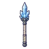 หอกผลึกถ้ำ | 60 | 99 | ศักดิ์สิทธิ์ | โกเลมหินแดง 0.06% |
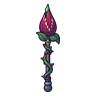 หอกกุหลาบกินคน | 61 | 104 | พิษ | ดอกไม้กินคน 0.12% |
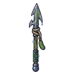 หอกฉมวกกัปปะ | 63 | 104 | น้ำ | กัปปะหนองหมอก 0.12% |
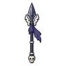 หอกปีกอัศวินกระดูก | 66 | 104 | ไม่มีธาตุ | อัศวินกระดูก 0.12% |
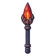 หอกหัวใจโกเลม | 67 | 99 | ไฟ | โกเลมหินแดง 0.06% |
| 72 | 99 | มืด | ภูตหมอกเงา 0.06% | |
| 74 | 109 | มืด | บอสผู้ถูกรากสิง | |
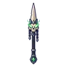 หอกคทาราชาสุสาน | 75 | 136 | วิญญาณ | บัลลังก์ราชาสุสาน 0.5% |
| 77 | 139 | ดิน | หนอนรากมุดดิน 0.25% | |
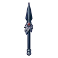 หอกปากนกกระสาเงา | 80 | 143 | มืด | นกกระสาเงา 0.25% |
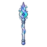 หอกแสงเหนือ | 82 | 126 | วิญญาณ | ผู้จุดตะเกียงรุ่นแรก 0.06% |
| 84 | 147 | ไฟ | หนอนลาวา 0.25% | |
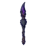 หอกหมารากสิง | 86 | 143 | มืด | หมารากสิง ร่างน้ำค้าง 0.5% |
| 86 | 132 | น้ำ | พลีซิโอซอร์ 0.12% | |
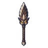 หอกนกฮูกราตรี | 89 | 132 | ลม | หุ่นระฆังจ่าฝูง 0.12% |
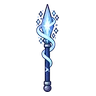 หอกดาวหาง | 91 | 126 | ไม่มีธาตุ | หุ่นสปริงระเบิด 0.06% |
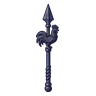 หอกไก่ใบพัดลม | 92 | 172 | ลม | ไก่ใบพัดลม 0.03% |
| 93 | 126 | ศักดิ์สิทธิ์ | หุ่นของคาร์ดินัล 0.06% | |
| 96 | 172 | ไฟ | หัวใจมังกรลาวา 0.5% | |
| 99 | 186 | น้ำ | ดรอปทั่วโลก Lv 90+ |